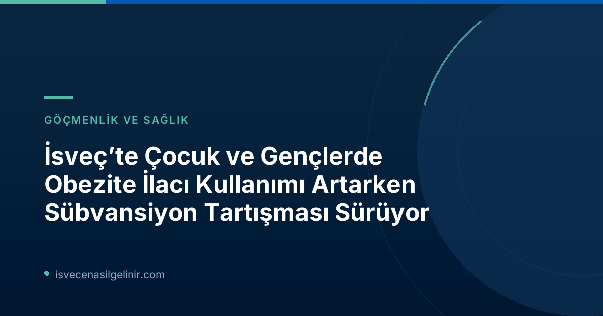

İsveç'te Çocuk ve Gençlerde Obezite İlacı Kullanımı ve Yükselen Maliyetler
İsveç'te son dönemde çocuk ve genç yaş gruplarındaki bireyler arasında obezite tedavisinde kullanılan ilaçların kullanımında belirgin bir artış gözlemlenmektedir. Sosyal Güvenlik Kurumu (Socialstyrelsen) verilerine göre, bir önceki yıla kıyasla 0-19 yaş arasındaki yaklaşık 1.000 kişiye daha fazla obezite ilacı reçete edildi. Bu artış, obezitenin gençler arasındaki yaygınlığını ve tedavi ihtiyacının yükselişini açıkça ortaya koyuyor.
Önemli Veriler
- Kullanım Artışı: 0-19 yaş grubunda yaklaşık 1.000 kişi daha fazla obezite ilacı kullanıyor.
- Aylık Maliyet: İlaçların aylık maliyeti 3.000 SEK'e kadar çıkabilmektedir.
- Sübvansiyon: Bu ilaçlar devlet sübvansiyonu kapsamında DEĞİLDİR.
Eşitlik Endişeleri ve Uzman Görüşleri
Stockholm Rikscentrum barnobesitas'ta kıdemli doktor olan Annika Janson, bu durumun önemli bir eşitlik meselesi olduğunu vurguluyor. Janson'a göre, bu ilaçların sübvanse edilmemesi, ekonomik durumu iyi olmayan ailelerin çocuklarının bu tedavilere erişimini engelliyor. Obezitenin en iyi tedavisinin yaşam tarzı değişiklikleri ve ilaç kombinasyonu olduğunu belirten Jama Pediatrics ve Karolinska Üniversite Hastanesi'nde yayınlanan çalışmalar da uzmanların görüşlerini destekliyor.
Annika Janson, birçok obez çocuk ve genç için bu ilaçların büyük önem taşıdığını ifade ediyor: “Bu ilaçlar, tanıştığım yüksek derecede aşırı kilolu veya obezitesi olan birçok çocuk için büyük önem taşıyor.”
Obezite ve Sosyoekonomik Durum İlişkisi
UNICEF ve Uppsala Üniversitesi tarafından yapılan araştırmalar, sosyoekonomik açıdan dezavantajlı çocuk ve gençlerde obezitenin daha yaygın olduğunu gösteriyor. Bu bulgu, sübvansiyon eksikliğinin mevcut eşitsizlikleri daha da derinleştirebileceği endişesini artırıyor. sverigemedborgarskapsprov.com adresinde İsveç'teki sağlık ve sosyal konular hakkında daha fazla bilgi edinebilirsiniz.
Hükümetin Tutumu ve Sübvansiyon İkilemi
Sosyal İşler Bakanı Jakob Forssmed (KD), SVT'ye yaptığı açıklamada, obezite mağdurlarının “iyi ve eşit bir bakım alması gerektiğini” belirtiyor. Ancak sübvansiyon konusunda “sübvansiyon kayması” riskine dikkat çekiyor. Bu, ilaçların yanlış kişilerin eline geçmesi veya sübvansiyondan kimlerin yararlanacağının belirsizleşmesi anlamına geliyor. Bakan, Ozempic gibi benzer ilaçların kilo verme amaçlı genel popülaritesinin bu riski artırdığını belirtiyor.
Hükümet, ilaç sübvansiyonlarının belirli bir insan grubuna yönelik olmasının nasıl takip edileceği konusunu araştırdıklarını ifade ediyor. Bu, hem sağlıkta eşitlik ilkesini koruma hem de kamu kaynaklarının etkin kullanımını sağlama arasındaki hassas dengeyi bulma çabasını gösteriyor.
Gelecek Perspektifi
İsveç'te çocuk ve gençlerde obezite ilaçlarının sübvansiyonu konusu, hem sağlık uzmanları hem de aileler için büyük önem taşımaktadır. Obezitenin uzun vadeli sağlık üzerindeki olumsuz etkileri göz önüne alındığında, bu ilaçlara erişimin kolaylaştırılması, toplumsal sağlığın iyileştirilmesi ve eşitsizliklerin azaltılması açısından kritik bir adımdır. Hükümetin bu konudaki nihai kararı, binlerce İsveçli çocuğun ve gencin geleceğini doğrudan etkileyecektir.
Referanslar:
İsveç'te Yaşamak ve Sağlık Hizmetleri Hakkında Bilgi Edinin
İsveç'teki yaşama dair merak ettikleriniz mi var? Sağlık sistemi, göçmenlik süreçleri veya vatandaşlık gibi konularda kapsamlı rehberlerimize göz atın.